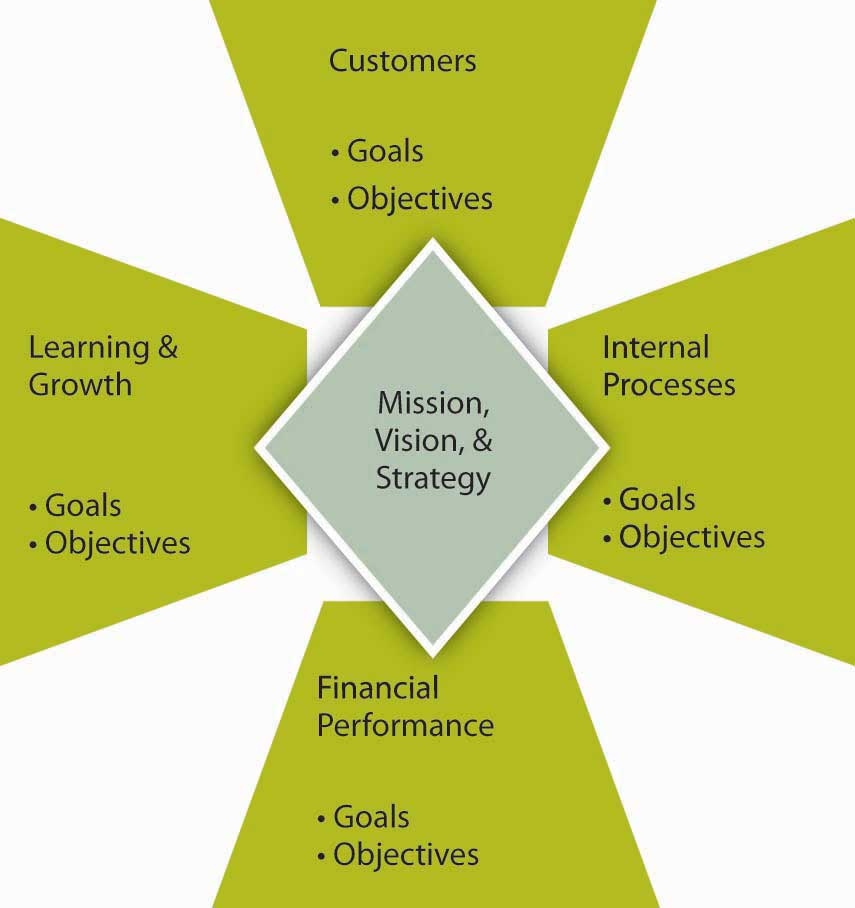
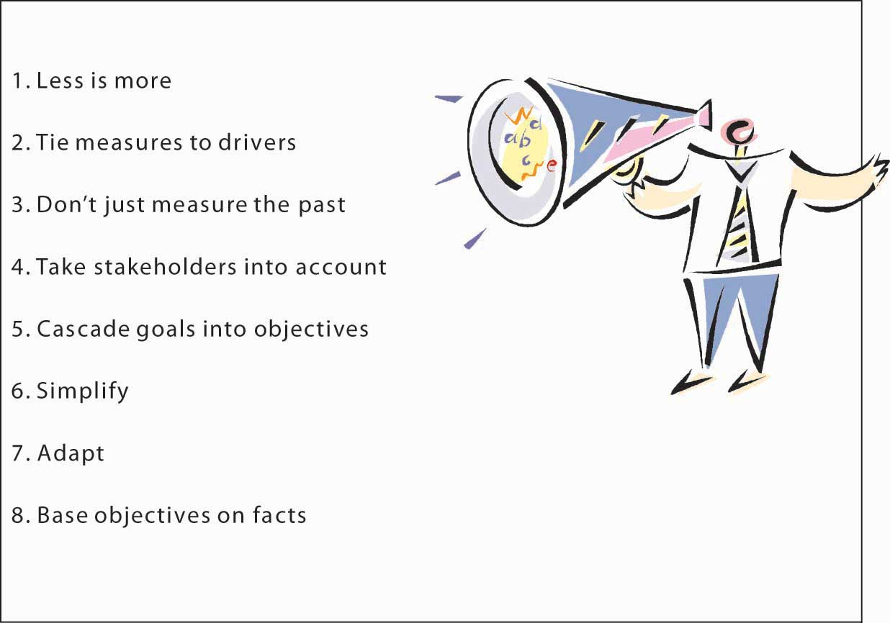

Reading this chapter will help you do the following:
Goals and objectives are a critical component of management, both in terms of planning and in terms of the larger planning-organizing-leading-controlling (P-O-L-C) framework. You can see their role summarized in the P-O-L-C figure. Unfortunately, because their role and importance seem obvious, they also tend to be neglected in managerial practice or poorly aligned with the organization’s strategy. You can imagine why this might be problematic, particularly since one of a manager’s functions is to evaluate employee performance—it would be nice if employees could be evaluated based on how their achievement of individual goals and objectives contributes to those critical to the organization’s survival and success. In this chapter, we introduce you to the basics on goals and objectives and provide you with an understanding of how their usage has evolved. We also show you how to develop a personalized set of goals and objectives to help you achieve your personal and professional aspirations.
Figure 6.2 Goals and Objectives in the P-O-L-C Framework

Manufacturing steel is not a glamorous job. The industry is beset by many problems, and more than 40 steel manufacturers have filed for bankruptcy in recent years. Most young employees do not view working at a steel mill as their dream job. Yet, one company distinguished itself from all the rest by remaining profitable for over 130 quarters and by providing an over 350% return on investment (ROI) to shareholders. The company is clearly doing well by every financial metric available and is the most profitable in its industry.
How do they achieve these amazing results? For one thing, every one of Nucor Corporation’s (NYSE: NUE) 12,000 employees acts like an owner of the company. The overarching goal is “take care of our customers.” Employees are encouraged to fix the things they see as wrong and have real power on their jobs. When there is a breakdown in a plant, a supervisor does not have to ask employees to work overtime; employees volunteer for it. In fact, the company is famous for its decentralized structure and for pushing authority and responsibility down to lower levels in the hierarchy. Tasks that previously belonged to management are performed by line workers. Management listens to lower level employees and routinely implements their new ideas.
The reward system in place at Nucor is also unique, and its employees may be the highest paid steelworkers in the world. In 2005, the average Nucor employee earned $79,000, followed by a $2,000 bonus decided by the company’s annual earnings and $18,000 in the form of profit sharing. At the same time, a large percentage of these earnings are based on performance. People have the opportunity to earn a lot of money if the company is doing well, and there is no upward limit to how much they can make. However, they will do much worse than their counterparts in other mills if the company does poorly. Thus, it is to everyone’s advantage to help the company perform well. The same incentive system exists at all levels of the company. CEO pay is clearly tied to corporate performance. The incentive system penalizes low performers while increasing commitment to the company as well as to high performance.
Nucor’s formula for success seems simple: align company goals with employee goals and give employees real power to make things happen. The results seem to work for the company and its employees. Evidence of this successful method is that the company has one of the lowest employee turnover rates in the industry and remains one of the few remaining nonunionized environments in manufacturing. Nucor is the largest U.S. minimill and steel scrap recycler.
Case written by [citation redacted per publisher request]. Based on information from Byrnes, N., & Arndt, M. (2006, May 1). The art of motivation. BusinessWeek. Retrieved April 30, 2010, from http://www.businessweek.com/magazine/content/06_18/b3982075.htm; Foust, D. (2008, April 7). The best performers of 2008. BusinessWeek. Retrieved April 30, 2010, from http://www.businessweek.com/magazine/toc/08_14/B4078bw50.htm?chan=magazine+channel_top+stories; Jennings, J. (2003). Ways to really motivate people: Authenticity is a huge hit with Gen X and Y. The Secured Lender, 59, 62–70; Marks, S. J. (2001). Incentives that really reward and motivate. Workforce, 80, 108–114.
Goals and objectives provide the foundation for measurement. GoalsOutcome statements that define what an organization is trying to accomplish, both programmatically and organizationally. are outcome statements that define what an organization is trying to accomplish, both programmatically and organizationally. Goals are usually a collection of related programs, a reflection of major actions of the organization, and provide rallying points for managers. For example, Wal-Mart might state a financial goal of growing its revenues 20% per year or have a goal of growing the international parts of its empire. Try to think of each goal as a large umbrella with several spokes coming out from the center. The umbrella itself is a goal.
In contrast to goals, objectivesVery precise, time-based, and measurable actions that support the completion of a goal. are very precise, time-based, measurable actions that support the completion of a goal. Objectives typically must (1) be related directly to the goal; (2) be clear, concise, and understandable; (3) be stated in terms of results; (4) begin with an action verb; (5) specify a date for accomplishment; and (6) be measurable. Apply our umbrella analogy and think of each spoke as an objective. Going back to the Wal-Mart example, and in support of the company’s 20% revenue growth goal, one objective might be to “open 20 new stores in the next six months.” Without specific objectives, the general goal could not be accomplished—just as an umbrella cannot be put up or down without the spokes. Importantly, goals and objectives become less useful when they are unrealistic or ignored. For instance, if your university has set goals and objectives related to class sizes but is unable to ever achieve them, then their effectiveness as a management tool is significantly decreased.
MeasuresThe actual metrics used to gauge performance on objectives. are the actual metrics used to gauge performance on objectives. For instance, the objective of improved financial performance can be measured using a number metrics, ranging from improvement in total sales, profitability, efficiencies, or stock price. You have probably heard the saying, “what gets measured, gets done.” Measurement is critical to today’s organizations. It is a fundamental requirement and an integral part of strategic planning and of principles of management more generally. Without measurement, you cannot tell where you have been, where you are now, or if you are heading in the direction you are intending to go. While such statements may sound obvious, the way that most organizations have set and managed goals and objectives has generally not kept up with this commonsense view.
There are three general failings that we can see across organizations related to measurement. First, many organizations still emphasize historic financial goals and objectives, even though financial outcomes are pretty narrow in scope and are purely historic; by analogy, financial measures let you know where you’ve been, but may not be a good predictor of where you are going.Frost, B. (2000). Measuring performance. Dallas: Measurement International.
Second, financial outcomes are often short term in nature, so they omit other key factors that might be important to the longer-term viability of the organization. For instance, return on sales (ROS, or net profit divided by total sales) is a commonly used measure of financial performance, and firms set goals and objectives related to return on sales. However, an organization can increase return on sales by cutting investments in marketing and research and development (since they are costs that lessen the “return” dimension of ROS). It may be a good thing to cut such costs, but that type of cost-cutting typically hurts the organization’s longer-term prospects. Decreases in marketing may reduce brand awareness, and decreases in research and development (R&D) will likely stifle new product or service development.
Finally, goals and objectives, even when they cover more than short-term financial metrics, are often not tied to strategy and ultimately to vision and mission. Instead, you may often see a laundry list of goals and objectives that lack any larger organizing logic. Or the organization may have adopted boilerplate versions of nonfinancial measurement frameworks such as Kaplan and Norton’s Balanced Scorecard, Accenture’s Performance Prism, or Skandia’s Intellectual Capital Navigator.Ittner, C. D., & Larcker, D. (2003, November). Coming up short on nonfinancial performance measurement. Harvard Business Review, pp. 1–8.
Goals and objectives are an essential part of planning. They also have cascading implications for all the aspects of organizing, leading, and controlling. Broadly speaking, goals and objectives serve to:
Planning typically starts with a vision and a mission. Then managers develop a strategy for realizing the vision and mission; their success and progress in achieving vision and mission will be indicated by how well the underlying goals and objectives are achieved. A vision statement usually describes some broad set of goals—what the organization aspires to look like in the future. Mission statements too have stated goals—what the organization aspires to be for its stakeholders. For instance, Mars, Inc., the global food giant, sets out five mission statement goals in the areas of quality, responsibility, mutuality, efficiency, and freedom. Thus, goals are typically set for the organization as a whole and set the stage for a hierarchy of increasingly specific and narrowly set goals and objectives.
However, unless the organization consists of only a single person, there are typically many working parts in terms of functional areas and product or service areas. Functional areas like accounting and marketing will need to have goals and objectives that, if measured and tracked, help show if and how those functions are contributing to the organization’s goals and objectives. Similarly, product and service areas will likely have goals and objectives. Goals and objectives can also be set for the way that functions and product or service areas interact. For instance, are the accounting and marketing functions interacting in a way that is productive? Similarly, is marketing delivering value to product or service initiatives?
Within the planning facet of P-O-L-C alone, you can think of goals and objectives as growing in functional or product/service arena specificity as you move down the organization. Similarly, the time horizon can be shorter as you move down the organization as well. This relationship between hierarchy and goals and objectives is summarized in the following figure.
Obviously, the role of goals and objectives does not stop in the planning stage. If goals and objectives are to be achieved and actually improve the competitive position of the firm, then the organizing, leading, and controlling stages must address goals and objectives as well.
The way that the firm is organized can affect goals and objectives in a number of ways. For instance, a functional organizational structure, where departments are broken out by finance, marketing, operations, and so on, will likely want to track the performance of each department, but exactly what constitutes performance will probably vary from function to function.
In terms of leadership, it is usually top managers who set goals and objectives for the entire organization. Ideally, then, lower-level managers would set or have input into the goals and objectives relevant to their respective parts of the business. For example, a CEO might believe that the company can achieve a sales growth goal of 20% per year. With this organizational goal, the marketing manager can then set specific product sales goals, as well as pricing, volume, and other objectives, throughout the year that show how marketing is on track to deliver its part of organizational sales growth. Goal setting is thus a primary function of leadership, along with holding others accountable for their respective goals and objectives.
Figure 6.4 Goals and Objectives in Planning

Finally, goals and objectives can provide a form of control since they create a feedback opportunity regarding how well or how poorly the organization executes its strategy. Goals and objectives also are a basis for reward systems and can align interests and accountability within and across business units. For instance, in a business with several divisions, you can imagine that managers and employees may behave differently if their compensation and promotion are tied to overall company performance, the performance of their division, or some combination of the two.
Goals are typically outcome statements, while objectives are very precise, time-based, and measurable actions that support the completion of goals. Goals and objectives are an essential element in planning and are a key referent point in many aspects of organizing, leading, and controlling. Broadly speaking, within the P-O-L-C framework, goals and objectives serve to (1) gauge and report performance, (2) improve performance, (3) align effort and, (4) manage accountabilities.
As you might expect, organizations use a variety of measurement approaches—that is, how they go about setting and managing goals and objectives. If you have an understanding of how the use of these approaches has evolved, starting with management by objectives (MBO)A systematic and organized approach that allows management to focus on achievable goals and to attain the best possible results from available resources., you will also have a much better view of how and why the current incarnations, as seen by variations on the Balanced ScorecardA framework designed to translate an organization’s vision and mission statements and overall business strategy into specific, quantifiable goals and objectives and to monitor the organization’s performance in terms of achieving these goals., have many desirable features.
MBO is a systematic and organized approach that allows management to focus on achievable goals and to attain the best possible results from available resources. MBO aims to increase organizational performance by aligning the subordinate objectives throughout the organization with the overall goals that management has set. Ideally, employees get strong input to identify their objectives, time lines for completion, and so on. MBO includes ongoing tracking and feedback in the process to reach objectives.
MBO was first outlined by Peter Drucker in 1954 in The Practice of Management. One of Drucker’s core ideas in MBO was where managers should focus their time and energy. According to Drucker, effective MBO managers focus on the result, not the activity. They delegate tasks by “negotiating a contract of objectives” with their subordinates and by refraining from dictating a detailed road map for implementation. MBO is about setting goals and then breaking these down into more specific objectives or key results. MBO involves (1) setting company-wide goals derived from corporate strategy, (2) determining team- and department-level goals, (3) collaboratively setting individual-level goals that are aligned with corporate strategy, (4) developing an action plan, and (5) periodically reviewing performance and revising goals.Greenwood, R. G. (1981). Management by objectives: As developed by Peter Drucker, assisted by Harold Smiddy. Academy of Management Review, 6, 225–230; Muczyk, J. P., & Reimann, B. C. (1989). MBO as a complement to effective leadership. Academy of Management Executive, 3, 131–138; Reif, W. E., & Bassford, G. (1975). What MBO really is: Results require a complete program. Business Horizons, 16, 23–30. A review of the literature shows that 68 out of the 70 studies conducted on this topic showed performance gains as a result of MBO implementation.Rodgers, R., & Hunter, J. E. (1991). Impact of management by objectives on organizational productivity. Journal of Applied Psychology, 76, 322–336. It also seems that top management commitment to the process is the key to successful implementation of MBO programs.Rodgers, R., Hunter, J. E., & Rogers, D. L. (1993). Influence of top management commitment on management program success. Journal of Applied Psychology, 78, 151–155.
The broader principle behind MBO is to make sure that everybody within the organization has a clear understanding of the organization’s goals, as well as awareness of their own roles and responsibilities in achieving objectives that will help to attain those goals. The complete MBO system aims to get managers and empowered employees acting to implement and achieve their plans, which automatically achieves the organization’s goals.
In MBO systems, goals and objectives are written down for each level of the organization, and individuals are given specific aims and targets. As consultants Robert Heller and Tim Hindle explain, “The principle behind this is to ensure that people know what the organization is trying to achieve, what their part of the organization must do to meet those aims, and how, as individuals, they are expected to help. This presupposes that organization’s programs and methods have been fully considered. If they have not, start by constructing team objectives and ask team members to share in the process.”Heller, R., & Hindle, T. (1998). Essential manager’s manual. London: Dorling Kindersley.
Echoing Drucker’s philosophy, “the one thing an MBO system should provide is focus; most people disobey this rule, try to focus on everything, and end up with no focus at all,” says Andy Grove, who ardently practiced MBO at Intel. This implies that objectives are precise and few in effective MBO systems.
Similarly, for MBO to be effective, individual managers must understand the specific objectives of their job and how those objectives fit in with the overall company goals set by the board of directors. As Drucker wrote, “A manager’s job should be based on a task to be performed in order to attain the company’s goals…the manager should be directed and controlled by the objectives of performance rather than by his boss.”Drucker, P. (1974). Management: Tasks, responsibilities, practices. London: Heinemann. The managers of an organization’s various units, subunits, or departments should know not only the objectives of their unit but should also actively participate in setting these objectives and make responsibility for them. The review mechanism enables the organization’s leaders to measure the performance of the managers who report to them, especially in the key result areas: marketing, innovation, human organization, financial resources, physical resources, productivity, social responsibility, and profit requirements.
In recent years, opinion has moved away from placing managers into a formal, rigid system of objectives. In the 1990s, Drucker decreased the significance of this organization management method when he said, “It’s just another tool. It is not the great cure for management inefficiency.”Drucker, P. (1986). The frontiers of management: Where tomorrow’s decisions are being shaped today. New York: Plume. Recall also that goals and objectives, when managed well, are tied in with compensation and promotion. In 1975, Steve Kerr published his critical management article titled, “On the Folly of Rewarding A, While Hoping for B,” in which he lambasted the rampant disconnect between reward systems and strategy.Kerr, S. (1975). On the folly of rewarding A, while hoping for B. Academy of Management Journal, 18, 769–783. Some of the common management reward follies suggested by Kerr and others are summarized in the following table. His criticism included the objective criteria characteristic of most MBO systems. Kerr went on to lead GE’s human resources function in the mid-1970’s and is credited with turning that massive organization’s recruiting, reward, and retention systems into one of its key sources of competitive advantage.
Table 6.1 Common Management Reward Follies
| We hope for… | But we often reward… |
| Long-term growth; environmental responsibility | Quarterly earnings |
| Teamwork | Individual effort |
| Setting challenging “stretch” goals | Achieving objectives; “making the numbers” |
| Downsizing; rightsizing; restructuring | Adding staffing; adding budget |
| Commitment to quality | Shipping on schedule, even with defects |
| Commitment to customer service | Keeping customers from bothering usThis item was not one of Kerr’s originals but is consistent with the spirit of Kerr’s article. We thank our developmental editor, Elsa Peterson, for this suggestion. |
| Candor; surfacing bad news early | Reporting good news, whether it’s true or not; agreeing with the boss, whether or not she or he is right |
Even though formal MBO programs have been out of favor since the late 1980s and early 1990s, linking employee goals to company-wide goals is a powerful idea that benefits organizations. This is where the Balanced Scorecard and other performance management systems come into play.
Developed by Robert Kaplan and David Norton in 1992, the Balanced Scorecard approach to management has gained popularity worldwide since the 1996 release of their text, The Balanced Scorecard: Translating Strategy into Action. In 2001, the Gartner Group estimated that at least 40% of all Fortune 1000 companies were using Balanced Scorecard; however, it can be complex to implement, so it is likely that the format of its usage varies widely across firms.
The Balanced Scorecard is a framework designed to translate an organization’s mission and vision statements and overall business strategy into specific, quantifiable goals and objectives and to monitor the organization’s performance in terms of achieving these goals. Among other criticisms of MBO, one was that it seemed disconnected from a firm’s strategy, and one of Balanced Scorecard’s innovations is explicit attention to vision and strategy in setting goals and objectives. Stemming from the idea that assessing performance through financial returns only provides information about how well the organization did prior to the assessment, the Balanced Scorecard is a comprehensive approach that analyzes an organization’s overall performance in four ways, so that future performance can be predicted and proper actions taken to create the desired future.
Balanced Scorecard shares several common features. First, as summarized in the following figure, it spells out goals and objectives for the subareas of customers, learning and growth, internal processes, and financial performance. The customer area looks at customer satisfaction and retention. Learning and growth explore the effectiveness of management in terms of measures of employee satisfaction and retention and information system performance. The internal area looks at production and innovation, measuring performance in terms of maximizing profit from current products and following indicators for future productivity. Finally, financial performance, the most traditionally used performance indicator, includes assessments of measures such as operating costs and return-on-investment.
Figure 6.6 The Balanced Scorecard
Source: Adapted from Kaplan, R., & Norton, D. (2001). The Strategy-Focused Organization. Boston: Harvard Business School Press.
On the basis of how the organization’s strategy is mapped out in terms of customer, learning, internal, and financial goals and objectives, specific measures, and the specific activities for achieving those are defined as well. This deeper Balanced Scorecard logic is summarized in the following figure. The method examines goals, objectives, measures, and activities in four areas. When performance measures for areas such as customer relationships, internal processes, and learning and growth are added to the financial metrics, proponents of the Balanced Scorecard argue that the result is not only a broader perspective on the company’s health and activities, it’s also a powerful organizing framework. It is a sophisticated instrument panel for coordinating and fine-tuning a company’s operations and businesses so that all activities are aligned with its strategy.
As a structure, Balanced Scorecard breaks broad goals down successively into objectives, measures, and tactical activities. As an example of how the method might work, an organization might include in its mission or vision statement a goal of maintaining employee satisfaction (for instance, the mission statement might say something like “our employees are our most valuable asset”). This would be a key part of the organization’s mission but would also provide an “internal” target area for that goal in the Balanced Scorecard. Importantly, this goal, when done correctly, would also be linked to the organization’s total strategy where other parts of the scorecard would show how having great employees provides economic, social, and environmental returns. Strategies for achieving that human resources vision might include approaches such as increasing employee-management communication. Tactical activities undertaken to implement the strategy could include, for example, regularly scheduled meetings with employees. Finally, metrics could include quantifications of employee suggestions or employee surveys.
Figure 6.7 Using the Balanced Scorecard to Translate Goals into Activities

Source: Adapted from Kaplan, R., & Norton, D. (2001). The Strategy-Focused Organization. Boston: Harvard Business School Press.
In practice, the Balanced Scorecard is supposed to be more than simply a framework for thinking about goals and objectives, but even in that narrow sense, it is a helpful organizing framework. The Balanced Scorecard’s own inventors “rightly insist that every company needs to dig deep to discover and track the activities that truly affect the frameworks’ broad domains (domains such as ‘financial,’ ‘customer,’ ‘internal business processes,’ and ‘innovation and learning’).”Ittner, C. D., & Larcker, D. (2003, November). Coming up short on nonfinancial performance measurement, Harvard Business Review, pp. 1–8. In its broadest scope, where the scorecard operates much like a map of the firm’s vision, mission, and strategy, the Balanced Scorecard relies on four processes to bind short-term activities to long-term objectives:
You can imagine that it might be difficult for organizations to change quickly from something like MBO to a Balanced Scorecard approach. Indeed, both MBO and the Balanced Scorecard fit in the larger collection of tools called performance management systemsThe process through which companies ensure that employees are working toward organizational goals.. Such systems outline “the process through which companies ensure that employees are working towards organizational goals.”Ghorpade, J., & Chen, M. (1995). Creating quality-driven performance appraisal systems. Academy of Management Executive, 9(1): 23–41.
Performance management begins with a senior manager linking his or her goals and objectives to the strategic goals of the organization. The manager then ensures that direct reports develop their goals in relation to the organization’s overall goals. In a multidivisional or multilocation organization, lower-level managers develop their goals, and thus their departmental goals, to correspond to the organizational goals. Staff members within each department then develop their objectives for the year, in cooperation with their managers. Using this pattern for planning, all activities, goals, and objectives for all employees should be directly related to the overall objectives of the larger organization.
Performance management systems are more than the performance review because reviews typically are the final event in an entire year of activity. At the beginning of the year, the manager and employee discuss the employee’s goals or objectives for the year. This will form the basis for ongoing discussion recorded in a document called the performance plan. The manager assists employees in developing their objectives by helping them to understand how their work relates to the department goals and the overall goals of the organization. The employee and manager also should work together to determine the measurements for evaluating each of the objectives. It is important that both the manager and employee agree what the objectives are and how they are to be measured.
Employees should not be set up with unrealistic expectations, which will only lead to a sense of failure. If additional support or education is required during the year to help employees meet their objectives, those can also be identified and planned for at this time.
The performance plan will contain the section on goals or objectives. It also should include a section that identifies the organization’s expectations of employee competencies. The set of expectations will involve a range of competencies applicable to employees based on their level in the organization. These competencies include expectations of how employees deal with problems, how proactive they are with respect to changing work, and how they interact with internal and external customers. While less complex than the Balanced Scorecard, you can see how the essential components are related. In addition to basic behavioral traits, supervisors and managers are expected to exhibit leadership and, more senior still, provide vision and strategic direction. It is important to ensure that employees understand these competencies in respect to themselves.
Throughout the year, the supervisor must participate actively in coaching and assisting all employees to meet their individual goals and objectives. Should a problem arise—either in the way that success is being measured or in the nature of the objectives set at the beginning of the year—it can be identified well in advance of any review, and adjustments to the goals or support for the employee can be provided. This is referred to as continual assessment.
For example, suppose a staff member predicted that he or she would complete a particular project by a particular date, yet they have encountered problems in receiving vital information from another department. Through active involvement in staff activities, the supervisor is made aware of the situation and understands that the employee is intimidated by the supervisor they must work with in the other department. With coaching, the employee develops a method for initiating contact with the other department and receives the vital information she requires to meet her objective.
The way that goals and objectives are managed in the P-O-L-C process has evolved over time. While organizations can have very simple performance measurement systems, these systems typically track multiple goals and objectives. The management by objectives (MBO) approach is perhaps one of the earliest systematic approaches to working with goals and objectives. The Balanced Scorecard is aimed to make key improvements on a simple MBO system, particularly by more clearly tying goals and objectives to vision, mission, and strategy and branching out beyond purely financial goals and objectives. MBO and the Balanced Scorecard belong to the larger family of systems called performance management systems.
To be clear, this section does not outline which goals or objectives are appropriate or inappropriate, economically, ethically, morally, or otherwise. Instead, you will learn many of the characteristics of good goals and objectives, with the aim of becoming a better organizational goal setter (in the last section of this chapter, we remind you about SMART criteria, which is the application of many of this section’s takeaways to the development of your personal and professional goals and objectives). At the same time, you should be able to look at a set of goals and objectives and critique them effectively, such that more appropriate goals and objectives can be developed to replace them.
Figure 6.8 Characteristics of Appropriate Goals and Objectives
We tend to think that goals and objectives are easy to set, and yet, this intuition is often wrong in the organizational context. Goals and objectives are difficult to set because we might not know what they should cover or because we lay out too many of them with the hope that we are covering all the bases. Similarly, goals and objectives can proliferate in organizations because new ones are set, while old ones are not discarded. Stanford University management professor Kathleen Eisenhardt noted that there must be a certain balance to the number and type of goals and objectives: too many goals and objectives are paralyzing; too few, confusing.Eisenhardt, K., & Sull, D. (2001, January). Strategy as simple rules. Harvard Business Review, pp. 1–11. In his popular book, Keeping Score, Mark Graham Brown lists several important factors to aid managers in “rethinking” their approach to setting and managing goals and objectives, what we might call the organization’s measurement system more broadly.Brown, M. G. (1996). Keeping score. New York: Productivity Press.
Let’s walk through each of these criteria to gain a better understanding of these desirable characteristics of organizational goals and objectives. It is useful here to start by recognizing that goals, objectives, and measures are different animals. As explained at the beginning of this chapter, goals tend to be general statements, whereas objectives are specific and time bound. Measures are the indicators used to assess achievement of the objective. In some cases, a goal, an objective, and a measure can be the same thing, but more often you will set a goal, have a few objectives underlying that goal, and then one or more measures for each of the objectives.
Less is more, fewer is better, and simple rules are the common mantra here. Eisenhardt suggests that organizations should have two to seven key goals, or rules, using her vocabulary.Eisenhardt, K., & Sull, D. (2001, January). Strategy as simple rules. Harvard Business Review, pp. 1–11. Such goals guide how the firm operates, identify which opportunities to pursue, set priorities, manage timing of actions, and even inform business exit decisions.
If the organization should have only two to seven key goals, what about objectives and measures? Metric guru Graham Brown suggests that managers should not try to follow any more than 20 measures of performance in terms of performance on objectives. Thus, with two to seven goals, and 20 performance measures, this means that you will likely have a number of objectives somewhere between the number of set goals and the number of measures. Why this limit? “No individual can monitor and control more than twenty variables on a regular basis,” says Graham Brown.Brown, M. G. (1996). Keeping score. New York: Productivity Press.
One of the key litmus tests for setting goals, objectives, and measures is whether they are linked in some way to the key factors driving an organization’s success or competitive advantage. This means that they must provide a verified path to the achievement of a firm’s strategy, mission, and vision. This characteristic of effective goals, objectives, and measures is one reason that many managers use some form of Balanced Scorecard in their businesses. The Balanced Scorecard process provides a framework for evaluating the overall measurement system in terms of what strategic objectives it contributes to. The big challenge, however, is to verify and validate the link to success factors. Managers who do not scrupulously uncover the fundamental drivers of their units’ performance face several potential problems. They often end up measuring too many things, trying to fill every perceived gap in the measurement system.
For a variety of reasons it is important to capture past performance. After all, many stakeholders such as investors, owners, customers, and regulators have an interest in how the firm has lived up to it obligations. However, particularly in the area of objectives and measurement, the best systems track the past, present, and future. Echoing this observation, Robert Kaplan, co-originator of the Balanced Scorecard framework, published another book on the subject called The Balanced Scorecard: You Can’t Drive a Car Solely Relying on a Rearview Mirror. A combination of goals, objectives, and measures that provides such information is sometimes referred to as a dashboard—like the analogy that a dashboard tells you how the car is running, and through the windshield you can see where you are going. Indicators on how well the economy is doing, for instance, can suggest whether your business can experience growing or declining sales. Another leading indicator is customer satisfaction. General Electric, for instance, asks its customers whether they will refer other customers to GE. GE’s managers have found that the higher this likelihood of referral, the greater the next quarter’s sales demands. As a result, GE uses this measure to help it forecast future growth, as well as evaluate the performance of each business unit.
While it is important to track the goals and objectives most relevant to the needs of the business, relevance is subjective. This is why it is valuable to understand who the organization’s key stakeholders are, and set the goals, objectives, and measures in such a way that stakeholders can be satisfied. Or, at the very least, stakeholders can gain information relevant to their particular interests. Some stakeholders may never be entirely satisfied with companies’ performance—for example, some environmental groups may continue to criticize a company’s environmental impact, but they can be somewhat placated with more transparent reporting of what the company is doing on the environmental front. Similarly, stakeholders with social concerns will appreciate transparency in reporting on the organization’s corporate social responsibility efforts.
The less-is-more concept can apply to the way that goals cascade into objectives, which cascade into measures. Tying goals and objectives to drivers of success means that vision, mission, and strategy cascade down to goals, and so on. The first benefit of this cascade approach is that goals and objectives are consistent with the strategy, vision, and mission. A second benefit is that goals and objectives in lower levels of the organization are more likely to be vertically and horizontally consistent since they should be designed to achieve the higher-level goals and objectives and, ultimately, the overarching strategy of the organization.
Information overload is a challenge facing all managers (and students and teachers!), and simplification builds on the idea that managers can attend to a few things well but many things poorly. Simplification refers both to the use of fewer, not more, metrics, objectives and goals, and the idea that multiple measures should be distilled down into single measures like an index or a simple catch-all question. For instance, GE’s use of the single question about referring customers is a powerful but effective leading metric and a metric that it can reinforce with its rewards system. When metrics involve multiple dimensions, in areas where the organization wants to gauge customer satisfaction, for example, a survey can have 10 or more questions. Think about the many customer satisfaction surveys you are asked to complete after making an online purchase. Which question is the most important? The challenge, of course, is that a simple average of the customer survey scores, while providing a simpler indicator, also may hide some key indicator that is now buried in the average score. Therefore, the organization might need to experiment a bit with different ways of simplifying the measures with the aim of providing one that best reflects achievement of the key objective.
An organization’s circumstances and strategies tend to change over time. Since goals, objectives, and measures need to tie directly to the organization’s strategy, they should be changed as well when the strategy changes. For example, many U.S. automakers set out to dominate certain car and truck segments on the basis of vehicle features and price, not fuel efficiency. However, the recent fluctuations in oil prices gave rise to a market for more fuel-efficient vehicles. Unless the automakers set some aggressive fuel efficiency objectives for their new models, however, that is unlikely to be a differentiating feature of their cars and trucks. Adaptation of metrics is not the same as adding more or other metrics. In the spirit of fewer and simpler measures, managers should be asked to take a measure away if they plan to introduce a new one.
Finally, while goals may sometimes be general (such as performance goals in which managers simply state, grow profits 10%), the objectives and the metrics that gauge them should be quite specific and set based on facts and information, not intuition. A fact-based decision-making process starts with the compilation of relevant data about the particular goal. This in turn typically requires that the organization invest in information and in information-gathering capabilities.
For example, early in Jack Welch’s tenure as CEO of GE, he set out a financial goal for the company of improving its return on assets (ROA), a measure of financial efficiency. One of the underlying determinants of ROA is inventory-turn, that is, how many times a firm can sell its stock of inventory in a given year. So, to improve ROA, a firm will likely have to also improve its inventory turns. One of GE’s divisions manufactured refrigerators and turned its inventory seven times per year. What objective should Welch set for the refrigerator division’s inventory turn? Instead of simply guessing, Welch sent a team of managers into another manufacturing firm (with permission of the firm’s owners and top managers) in a different industry and learned that it was achieving turns of 12 to 17 times per year! Armed with this information, Welch could then set a clear and fact-based inventory-turn objective for that division, which in turn supported one of the overarching financial goals he had set for GE.
Figure 6.9 Steve Jobs Announcing Apple’s Release of the iPhone
Fact-based objectives typically can be clearer and more precise the shorter the relative time to their achievement. For instance, a firm can likely predict next week’s sales better than next year’s sales. This means that goals and objectives for the future will likely need to be more specific when they are fairly current but will necessarily be less precise down the road.
The main challenge with fact-based objectives is that many firms find future opportunities in markets where there is not an existing set of customers today. For instance, before Apple released the iPhone, how big would you expect that market to be? There certainly were no facts, aside from general demographics and the technology, to set fact-based goals and objectives. In such cases, firms will need to conduct “experiments” where they learn about production and market characteristics, such that the first goals and objectives will be related to learning and growth, with more specific fact-based objectives to follow. Otherwise, firms will only take action in areas where there are data and facts, which clearly creates a paradox for managers if the future is uncertain in their particular industry.
This section described eight general characteristics of good goals, objectives, and measures. Fewer and simpler goals and objectives are better than more and complex ones. Similarly, goals and objectives should be tied to strategy and, ultimately, to vision and mission, in a cascading pattern so that objectives and measures support the goals they are aiming to help achieve. Goals and objectives must also change with the times and, wherever possible, be anchored in facts or fact-finding and learning.
Since leadership is tasked with accomplishing things through the efforts of others, an important part of your principles of management tool kit is the development and performance evaluation of people. A performance evaluationThe constructive process to acknowledge an employee’s performance. is a constructive process to acknowledge an employee’s performance. Goals and objectives are a critical component of effective performance evaluations, so we need to cover the relationship among them briefly in this section. For instance, the example evaluation form needs to have a set of measurable goals and objectives spelled out for each area. Some of these, such as attendance, are more easy to describe and quantify than others, such as knowledge. Moreover, research suggests that individual and organizational performance increase 16% when an evaluation system based on specific goals and objectives is implemented.Rynes, S., Brown, K., & Colbert, A. 2002. Seven common misconceptions about human resource practices: Research findings versus practitioner beliefs. Academy of Management Executive, 16(3): 92–102.
Most organizations conduct employee performance evaluations at least once a year, but they can occur more frequently when there is a clear rationale for doing so—for instance, at the end of a project, at the end of each month, and so on. For example, McKinsey, a leading strategy consulting firm, has managers evaluate employees at the end of every consulting engagement. So, in addition to the annual performance evaluation, consultants can receive up to 20 mini-evaluations in a year. Importantly, the timing should coincide with the needs of the organization and the development needs of the employee.
Performance evaluations are critical. Organizations are hard-pressed to find good reasons why they can’t dedicate an hour-long meeting at least once a year to ensure the mutual needs of the employee and organization are being met. Performance reviews help managers feel more honest in their relationships with their subordinates and feel better about themselves in their supervisory roles. Subordinates are assured clear understanding of what goals and objectives are expected from them, their own personal strengths and areas for development, and a solid sense of their relationship with their supervisor. Avoiding performance issues ultimately decreases morale, decreases credibility of management, decreases the organization’s overall effectiveness, and wastes more of management’s time to do what isn’t being done properly.
Finally, it is important to recognize that performance evaluations are a not a panacea for individual and organizational performance problems. Studies show that performance-appraisal errors are extremely difficult to eliminate.Rynes, S., Brown, K., & Colbert, A. 2002. Seven common misconceptions about human resource practices: Research findings versus practitioner beliefs. Academy of Management Executive, 16(3): 92–102. Training to eliminate certain types of errors often introduces other types of errors and sometimes reduces accuracy. The most common appraisal error is leniency, and managers often realize they are committing it. Mere training is insufficient to eliminate these kinds of errors: action that is more systematic is required, such as intensive monitoring or forced rankings.
Figure 6.11 Example Employee Evaluation Form

For the purpose of this example, let’s assume that the organization has determined that annual performance evaluations fit the strategic needs of the organization and the developmental needs of employees. This does not mean however that management and employees discuss goals, objectives, and performance only once a year. In our example, the organization has opted to have a midyear information meeting and then an end-of-year performance evaluation meeting.
At some point in the year, the supervisor should hold a formal discussion with each staff member to review individual activities to date and to modify the goals and objectives that employee is accountable for. This agreed-upon set of goals and objectives is sometimes called an employee performance plan. There should be no surprises at this meeting. The supervisor should have been actively involved in continual assessment of his or her staff through regular contact and coaching. If major concerns arise, the performance plan can be modified or the employees can receive development in areas in which they may be weak. This also is a time for the employee to provide formal feedback to the supervisor on the coaching, on the planning, and on how the process seems to be working.
At the end of the year, a final review of the activities and plans for developing the next year’s objectives begin. Again, this is a chance to provide constructive and positive feedback and to address any ongoing concerns about the employee’s activities and competencies. Continuing education opportunities can be identified, and for those systems linked to compensation, salary raises will be linked to the employee’s performance during the year. Again, there should be no surprises to either employee or supervisor, as continual assessment and coaching should take place throughout the year. Supervisors and managers are involved in the same series of activities with their own supervisors to ensure that the entire organization is developing and focused on the same common objectives.
There are many varieties of performance management systems available, but you must be aware that you will need to tailor any system to suit the needs of the organization and the staff. As the organization and its competitive environment change over time, the system will also need to develop to reflect changes to employee competencies, ranking systems, and rewards linked to the plan.
How do you handle your reviews, that is, when you are the focus of the review process? “Your Performance Review” summarizes some key ideas you might keep in mind for your next review.
There are typically three areas you should think about when having your own performance reviewed: (1) preparation for the review, (2) what to do if the review is negative, and (3) what should you ultimately take away from the review.
Prepare for an upcoming review. Document your achievements and list anything you want to discuss at the review. If you haven’t kept track of your achievements, you may have to spend some time figuring out what you have accomplished since your last review and, most importantly, how your employer has benefited, such as increased profits, grown the client roster, maintained older clients, and so on. These are easier to document when you have had clear goals and objectives.
What should you do if you get a poor review? If you feel you have received an unfair review, you should consider responding to it. You should first try to discuss the review with the person who prepared it. Heed this warning, however. Wait until you can look at the review objectively. Was the criticism you received really that off the mark or are you just offended that you were criticized in the first place? If you eventually reach the conclusion that the review was truly unjust, then set an appointment to meet with your reviewer. If there are any points that were correct, acknowledge those. Use clear examples that counteract the criticisms made. A paper trail is always helpful. Present anything you have in writing that can back you up. If you didn’t leave a paper trail, remember to do this in the future.
What should you take away from a performance review? Ultimately, you should regard your review as a learning opportunity. For instance, did you have clear goals and objectives such that your performance was easy to document? You should be able to take away valuable information, whether it is about yourself or your reviewer.
While there is no single “best way” to manage performance evaluations, the collective actions across a number of high-performing firms suggests a set of best practices.
This section outlined the relationship between goals and objectives and employee performance evaluation. Performance evaluation is a tool that helps managers align individual performance with organizational goals and objectives. You saw that the tool is most effective when evaluation includes well-developed goals and objectives that are developed with the needs of both the organization and employee in mind. The section concluded with a range of best practices for the performance evaluation process, including the revision of goals and objectives when the needs of the organization change.
One of the overarching lessons of this chapter is that goals and objectives are only effective to the extent that they reinforce the organization’s strategy and therefore the realization of its vision and mission. This section is somewhat integrative in that it provides knowledge about the ways that goals and objectives related to social and environmental issues can be tied back into strategy using a Balanced Scorecard approach.
The corporate social responsibility (CSR)How companies manage the business processes to produce an overall positive impact on society. movement is not new and has been gathering momentum for well over a decade.Crawford, D., & Scaletta, T. (2005, November 24). http://www.greenbiz.com/feature/2005/10/24/the-balanced-scorecard-and-corporate-social-responsibility-aligning-values-profit (accessed November 11, 2008). CSR is about how companies manage their business processes to produce an overall positive effect on society. This growth has raised questions—how to define the concept and how to integrate it into the larger body of an organization’s goals and objectives. The Dow Jones Sustainability Index created a commonly accepted definition of CSR: “a business approach that creates long-term shareholder value by embracing opportunities and managing risks deriving from economic, environmental and social developments.”http://www.sustainability-index.com/07_htmle/sustainability/corpsustainability.html (accessed November 11, 2008). Specifically, the Dow Jones Sustainability Index looks at competence in five areas:
Since you are already familiar with the Balanced Scorecard from the previous section, you will probably already see how it can be used for CSR (a brief summary of the Balanced Scorecard concept is found in “The Balanced Scorecard at a Glance”). As experts from GreenBiz.com have observed:
“One of the fundamental opportunities for the CSR movement is how to effectively align consumer and employee values with strategy to generate long-term benefits—a better understanding of precisely with whom, what, when, where, how and why an enterprise makes a profit or surplus. CSR requires more holistic strategic thinking and a wider stakeholder perspective. Because the Balanced Scorecard is a recognized and established management tool, it is well positioned to support a knowledge-building effort to help organizations make their CSR values and visions a reality. The Balanced Scorecard enables individuals to make daily decisions based upon values and metrics that can be designed to support these long-term cognizant benefits.”Crawford, D., and Scaletta, T. (2005, November 24). www.greenbiz.com/feature/2005/10/24/the-balanced-scorecard-and-corporate-social-responsibility-aligning-values-profit (accessed November 11, 2008).
Thus, the Balanced Scorecard is an ideal vehicle for integrating CSR concerns with the organization’s mission, vision, and strategy.
As you know, the Balanced Scorecard is a focused set of key financial and nonfinancial indicators. These indicators include leading, pacing, and lagging measures. The term “balanced” does not mean equivalence among the measures but rather an acknowledgment of other key performance metrics that are not financial. The now classic scorecard, as outlined by Robert Kaplan and David Norton, has four quadrants or perspectives: (1) learning and growth, (2) internal, (3) customer, and (4) financial. Moreover, the idea is that each of these perspectives should be linked. For example, increased training for employees (learning and growth) can lead to enhanced operations or processes (internal), which leads to more satisfied customers through either improved delivery time and/or lower prices (customers), which finally leads to higher financial performance for the organization (financial).
A number of academic authors as well as global management consulting firms like McKinsey and KPMG have written about the pressures facing firms with regard to social and environmental issues. For instance, KPMG’s “International Survey of Corporate Responsibility Reporting 2008” reflects the growing importance of corporate responsibility as a key indicator of nonfinancial performance, as well as a driver of financial performance.http://www.kpmg.com/Global/IssuesAndInsights/ArticlesAndPublications/Pages/Sustainability-corporate-responsibility-reporting-2008.aspx (accessed November 11, 2008). Also see http://www.csrwire.com/News/13565.html (accessed January 30, 2009). In the 2008 survey, KPMG noted a significant increase in the publication of corporate responsibility reports in the United States, from 37% in their 2005 survey to 74% in 2008. KPMG concluded that the survey findings also reflect a growing sense of responsibility in the business community to improve transparency and accountability to the wider community—not just to shareholders (see below for a summary of KPMG’s analysis of U.S. CSR practices).
“The increase in corporate responsibility reporting by the top 100 companies in the United States may be attributed to an increased focus on sustainability issues within US business in the last several years. This year’s survey found that the top three drivers for corporate responsibility reporting remained the same as in ethical considerations, economic considerations, and innovation and learning.
“However, within these drivers, ethical considerations (70 percent) replaced economic considerations (50 percent) as the primary driver. We also noticed a gradual maturation of corporate responsibility programs by US companies. Of the 74 percent that reported publicly, 82 percent had a defined corporate responsibility or sustainability strategy, and 77 percent had implemented management systems for their corporate responsibility goals. Furthermore, 78 percent had defined specific indicators relating to stated objectives and 68 percent actually reported on performance against the stated objectives.”
The actual effect of these challenges and opportunities was recently identified in an earlier (2006) KPMG’s “International Survey of Corporate Responsibility Reporting.”http://www.kpmg.nl/Docs/Corporate_Site/Publicaties/International_Survey_Corporate_Responsibility_2005.pdf. This report surveyed more than 1,600 companies worldwide and documented the top 10 motivators driving corporations to engage in CSR for competitive reasons, which are:
By creatively responding to these market forces, and others generated by the CSR movement, organizations can reap considerable benefits. There are many examples of how companies are being affected by CSR drivers and motivators. The following two examples are just a brief sample of the myriad CSR performance motivators that are top of mind for managers.
Swedish home furnishings retailer IKEA discloses a lot of detailed information with regard to supply chain management in its annual CSR report.http://www.ikea-group.ikea.com/ (accessed November 11, 2008). As IKEA has suppliers in countries where the risk of labor rights abuses are perceived as high, they are obligated to work on these issues in a systematic way, which can be followed up on both internally and externally. IKEA’s 2007 “Social and Environmental Responsibility Report” is noteworthy because of its transparency on its supply chain. For example, IKEA reported on the top five purchasing countries as well as on how many IKEA suppliers are IWAY approved (The IKEA Way on Purchasing Home Furnishing Products).http://www.ikea.com/ms/en_US/about_ikea/social_environmental/the_ikea_way.html (accessed January 30, 2009). China is number one in the top five purchasing countries at 22%, yet at the same time has the lowest number of IWAY-approved suppliers (4%). IKEA seems aware that transparency also calls for completeness and has disclosed well-developed information about the challenges in Asia in general and in China specifically.
PEMEX (Mexico) is a government-controlled body that was created as a decentralized government agency of the Federal Public Administration. Its core purpose is to drive the nation’s central and strategic development activities in the state’s petroleum industry. PEMEX holds the number 11 position as a crude oil producer and is one of the three main suppliers of crude oil for the U.S. market. In 2007, total sales amounted to approximately $104.5 billion. Active personnel at PEMEX at the end of 2007 rose to 154,802 workers. PEMEX has been publishing corporate responsibility reports since 1999. The 2007 report complies with the indicators set forth in the Global Reporting Initiative (GRI) Guidelines and was the first Mexican GRI Application Level A+ report—the highest level.http://www.pemex.com (accessed 2008, November 11). Moreover, the report meets the guidelines of the United Nations Global Compact for communication in progress. The report addressed the needs of a complex sector, including the national oil and gas industry, a vast list of stakeholders, and a citizen participation group composed of highly renowned specialists to address citizens’ concerns.
One of the organizational challenges with CSR is that it requires firms to measure and report on aspects of their operations that were either previously unmonitored or don’t clearly map into the firm’s strategy. Thus, goals and objectives related to growing revenues through green consumers in the Lifestyles of Health and Sustainability (LOHASAn acronym for Lifestyles of Health and Sustainability, a market segment focused on health and fitness, the environment, personal development, sustainable living, and social justice.) marketplace comes with the price of increased transparency—this customer group demands the necessary data to make informed decisions. Ethical considerations, KPMG’s second driver, are directly linked to the LOHAS market. LOHAS describes a $226.8 billion marketplace for goods and services focused on health, the environment, social justice, personal development, and sustainable living. The consumers attracted to this market have been collectively referred to as “cultural creatives” and represent a sizable group in the United States.Florida, R. (2005). The flight of the creative class: The global competition for talent. New York: HarperCollins. Interested stakeholders, such as employees, regulators, investors, and nongovernmental organizations (NGOs), pressure organizations to disclose more CSR information. Companies in particular are increasingly expected to generate annual CSR reports in addition to their annual financial reports.
CSR reporting measures an organization’s economic, social, and environmental performance and impacts. The measurement of CSR’s three dimensions is commonly called the triple bottom lineCaptures an expanded spectrum of values and criteria for measuring organizational (and societal) success; economic, environmental, and social. (TBL). The Global Reporting Initiative (GRI), mentioned in the case of PEMEX, is the internationally accepted standard for TBL reporting. The GRI was created in 1997 to bring consistency to the TBL reporting process by enhancing the quality, rigor, and utility of sustainability reporting. GRI issued its first comprehensive reporting guidelines in 2002 and its G3 Reporting Framework in October 2006. Since GRI was established, more than 1,000 international companies had registered with the GRI and issued corporate sustainability reports using its standards.http://www.globalreporting.org/Home.
Representatives from business, accounting societies, organized labor, investors, and other stakeholders all participated in the development of what are now known as the GRI Sustainability Guidelines. The guidelines are composed of both qualitative and quantitative indicators. The guidelines and indicators were not designed, nor intended, to replace Generally Accepted Accounting Principles (GAAP) or other mandatory financial reporting requirements. Rather, the guidelines are intended to complement GAAP by providing the basis for credibility and precision in non-financial reporting.
Some firms develop and apply their own sets of metrics. Royal Dutch Shell spent in excess of $1 million to develop its environmental and social responsibility metrics. Instead of picking numbers from established sources, such as the GRI template, Shell held 33 meetings with stakeholders and shareholders.The Shell metrics effort was widely reported in a number of newsletters and articles. See, for example, http://www.juergendaum.com/news/05_12_2001.htm. The derived metrics became a much more accurate reflection of what its customers and other stakeholders wanted, and thus, a true reflection of its strategy, mission, and vision.
One of the key benefits for an organization using a Balanced Scorecard is improved strategic alignment. The Balanced Scorecard can be an effective format for reporting TBL indicators, as it illustrates the cause-and-effect relationship between good corporate citizenship and a successful business. Enterprises can use the combination of the Balanced Scorecard and CSR to help create a competitive advantage by letting decision makers know whether they are truly entering into a CSR virtuous cycle in which economic and environmental performance, coupled with social impacts, combine to improve organizational performance exponentially.
What do we mean by virtuous cycle? A company could begin to compete on cost leadership as a result of improved technology and effective and efficient processes, which leads to improved ecological protection, which results in better risk management and a lower cost of capital. Alternatively, a company could differentiate from its competitors’ values and performance as a result of its community-building activities, which can improve corporate reputation, result in improved brand equity, creating customer satisfaction, which increases sales. The move to a broad differentiation strategy can also be achieved through extensive knowledge of green consumers and leveraging their information needs through appropriate CSR reporting to improve brand equity and reputation. These examples are designed to illustrate the interrelationships in an organization’s triple bottom line.
Several organizations have already recognized this powerful combination and have adapted or introduced a Balanced Scorecard that includes CSR elements to successfully implement strategy reflective of evolving societal values. Many managers are familiar with the Balanced Scorecard and thus have a tool at their disposal to help them navigate the sometimes foggy worlds of strategy and CSR. The Balanced Scorecard can help organizations strategically manage the alignment of cause-and-effect relationships of external market forces and impacts with internal CSR drivers, values, and behavior. It is this alignment combined with CSR reporting that can enable enterprises to implement either broad differentiation or cost leadership strategies. If managers believe there will be resistance to stand-alone CSR initiatives, they can use the Balanced Scorecard to address CSR opportunities and challenges. If you are so motivated, the managerial skills and tools you gain through an understanding of P-O-L-C will help you to lead your organization toward a CSR virtuous cycle of cognizant benefits, understanding precisely how and why their company’s profits are made.
This section explored the challenges and opportunities of incorporating social and environmental goals and objectives into the P-O-L-C process. Many organizations refer to social and environmental activities as corporate social responsibility (CSR). For many firms, general operating goals and objectives have not been well integrated with strategy, vision, and mission, so it may not be surprising that social and environmental goals, in particular, have not gained much traction. However, when an organization uses tools such as the Balanced Scorecard to manage goals and objectives, then there is a coherent vehicle for incorporating social and environmental objectives in the mix as well.
One of the powerful tools in a manager’s tool kit is the Balanced Scorecard, a model that groups goals, objectives, and metrics into the areas of financial, customer, internal business process, and learning and growth. As you know, the scorecard is effective because it helps managers link vision, mission, and strategy to the goals and objectives that employees strive to achieve. What you may not know, however, is that you can apply the scorecard to your personal and professional objectives. Through this process you might also learn more about where and how a Balanced Scorecard can be applied in an organizational context in your role as a manager or employee. That is the purpose of this section.
The Balanced Scorecard, championed by Kaplan and Norton, can be translated into your own individual scorecard, one that helps you achieve your personal and professional goals and objectives. Recall that the scorecard for an organization starts with vision and mission, followed by goals (financial, internal business processes, customer, and learning and growth), which have corresponding objectives, metrics, and tactical activities. When these components are applied to you as an individual, you might see the pieces of the scorecard labeled as shown in the following figure. Let’s review each piece together.
Figure 6.14 My Balanced Scorecard

As with an organization’s mission and vision, your personal mission and vision reflect who you are and where you want to go. Mission reflects your values and philosophy of life. Vision captures what you want to achieve. Which values and principles guide your way? What are your most deeply cherished aspirations? What do you want to achieve? How do you distinguish yourself in society and among your peers and family? If you were to read your biography in 20 years, what would you want it to say about you?
Goals and roles are set out with respect to the areas of financial, others, individual strengths, and learning and growth. Financial, for instance, captures your needs and aspirations about money, as well as the financial obligations that you might have as a result of your role of caring for a parent, sibling, or child. Others reflect goals that you have in relation to other individuals or society at large. How do you want to be seen? Also, in terms of roles, what do relations with your partner, children, friends, employer, colleagues, and others imply for your goals? Individual strengths represent the internal perspective, reflecting goals related to your health and well-being. This category also reflects those strengths that you wish to be distinguishing features. Finally, learning and growth refer to your skills, abilities, and aims with regard to personal and professional learning and growth. How can you learn and remain successful in the future? What type of skills and learning are required now, for future aspired roles?
These portions of the scorecard get more specific in terms of which measurable short-term personal results you want to achieve. What are the most important changes you want to tackle in your career? Similarly, you will want to answer how you can measure your personal results. What values do you have to obtain, and what are your specific targets?
For personal objectives and performance measures to be most effective, you might try seeing how they measure up to SMARTA goal that is specific, measurable, achievable, realistic, and timely. criteria. These characteristics, based on specific, measurable, attainable, realistic, and time bound yield the acronym SMART.Drucker, P. (1954). The Practice of management. New York: HarperCollins. Drucker coined the usage of the acronym for SMART objectives while discussing objective-based management. Here is how to tell if your objectives, measures, and targets are SMART.
A specific objective has a much greater chance of being accomplished than a general one. To set a specific objective, you must answer the six “W” questions:
EXAMPLE: A personal goal would be, “Get in shape.” But a specific objective would say, “Get into good enough shape that 6 months from now I can hike to the summit of a 14,000-foot mountain and back in one day. To do so, by next Monday I will join a health club within 5 miles of home and work out for at least 45 minutes 3 days a week for 3 months, then reassess my progress.”We thank Elsa Peterson, our developmental editor, for providing this example based on one of her friend’s personal experiences. Another real-life comparable example is shown here: Manochio, M. (2008, September 30). http://www.dailyrecord.com/apps/pbcs.dll/article?AID=/20080930/COMMUNITIES12/809300311 (accessed November 10, 2008).
Establish concrete criteria for measuring progress toward the attainment of each objective you set. When you measure your progress, you stay on track, reach your target dates, and experience the exhilaration of achievement that spurs you on to continued effort required to reach your objective.
To determine whether your objective is measurable, ask questions such as: How much? How many? How will I know when it is accomplished? Notice that the specific version of the “get in shape” objective includes metrics of time and distance.
When you identify objectives that are most important to you, you begin to figure out ways you can make them come true. You develop the attitudes, abilities, skills, and financial capacity to reach them. You begin seeing previously overlooked opportunities to bring yourself closer to the achievement of your goals and objectives.
You can attain most any objective you set when you plan your steps wisely and establish a time frame that allows you to carry out those steps. Goals that may have seemed far away and out of reach eventually move closer and become attainable, not because your goals shrink but because you grow and expand to match them through the achievement of nearer-term objectives. When you list your objectives, you build your self-image. You see yourself as worthy of these goals and objectives and develop the traits and personality that allow you to possess them.
Notice that the “get in shape” example outlines steps toward being able to climb the mountain.
To be realistic, an objective must represent an objective toward which you are both willing and able to work. An objective can be both high and realistic; you are the only one who can decide just how high your objective should be. But be sure that every objective represents substantial progress. A high objective is frequently easier to reach than a low one because a low objective exerts low motivational force. Some of the hardest jobs you ever accomplished actually seem easy simply because they were a labor of love.
Your objective is probably realistic if you truly believe that it can be accomplished. Additional ways to know whether your objective is realistic is to determine whether you have accomplished anything similar in the past or ask yourself what conditions would have to exist to accomplish this objective.
You might decide whether an objective to climb a 14,000-foot mountain is realistic by considering whether people of your age and ability have been able to do it.
An objective should be grounded within a time frame. With no time frame tied to it, there’s no sense of urgency. If you want to lose 10 pounds, when do you want to lose it by? “Someday” won’t work. But if you anchor it within a time frame, “by May 1st,” then you’ve set your unconscious mind into motion to begin working on the objective.
T can also stand for Tangible.
An objective is tangible when you can experience it with one of the senses, that is, taste, touch, smell, sight, or hearing. When your objective is tangible, you have a better chance of making it specific and measurable and thus attainable.
The objective of climbing the mountain is both grounded in a time frame—six months from now—and tangible, in that you will either experience climbing the mountain successfully or not.
The next step is implementation. One way to think about implementation of your Balanced Scorecard is through the plan-do-act-dare cycle (PDAD cycleThe plan-do-act-dare cycle is one strategy for undertaking the implementation of personal improvement activities in a personal Balanced Scorecard.), to be followed continuously.Rampersad. 2005. Personal Balanced Scorecard: The way to individual happiness, personal integrity, and organizational effectiveness. Charlotte, NC: Information Age Publishing. As summarized in the following figure, the PDAD cycle consists of the following four phases:
Figure 6.15 The PDAD Cycle

Formulate or update your scorecard, which focuses on your work as well as on your spare time. This spans vision and mission through personal objectives and performance metrics.
Start with a simple objective from your scorecard with corresponding improvement activity, keeping in mind the priorities that have been identified. Each morning, focus on a selected improvement action that you will strive to implement during the day. Execute the improvement activity with emotional dedication, self-confidence, and willpower and concentrate on the action. This must be in concordance with your present skills. Share your good intentions with a trusted person (spouse, friend, colleague, or manager), who will ask questions and give you honest feedback. Doing is related to acting with purpose and to deliver efforts to realize your objective. Ask often for feedback from the trusted person. This gives you the opportunity to measure the progress you have made. Start with habits, which restrict you, influence your life unfavorably, and deliver poor results.
Check whether the improvement activity is working and take action when it is not. Review the results according to the defined personal performance measures and targets, measure your progress, and check to what extent you have realized your personal objectives—as suggested by the “assess my progress” portion of the mountain-climbing goal. If you have not been able to realize your objective, start again. You will improve steadily as it becomes a habit to do good things right the first time and evaluate your scorecard each month with your trusted person. Think of three people who can act as your trusted person, who provide you with inspiration and motivation support for realizing your objectives and improvement actions. Plan to meet with each one of them regularly. Listen enthusiastically to them, brainstorm with them, and take their wise counsel. Develop your skills and competencies to achieve the objectives you selected. Recognize your responsibility to constantly develop yourself. Implement the proven personal improvements, assess the personal results, document the lessons learned, and improve and monitor your actions and thinking continuously. Also think about bringing your personal ambition and your personal behavior into balance, which will result in influencing your ethical behavior. According to Steven Covey, author of The Seven Habits of Highly Effective People, after a few weeks, you will notice small differences in yourself. In two months, the behavioral change will become firmly embedded. After five months, the important personal quality will be yours.
Accept larger challenges by daring to take on a more difficult objective and corresponding improvement action from your scorecard and get on with it. Take a chance and be conscientious to choose a more challenging objective in line with your improved skills when the current improvement action becomes boring. Enjoy the pleasant experience, and document what you have learned and unlearned during the execution of the improvement action. Refine it, and review your scorecard regularly.
The purpose of this section was to help you translate the Balanced Scorecard to your own personal and professional situation. You learned how you might construct the scorecard, and take action to achieve personal results. Through this process, you might also learn more about where and how a Balanced Scorecard can be applied in an organizational context in your role as a manager or employee.